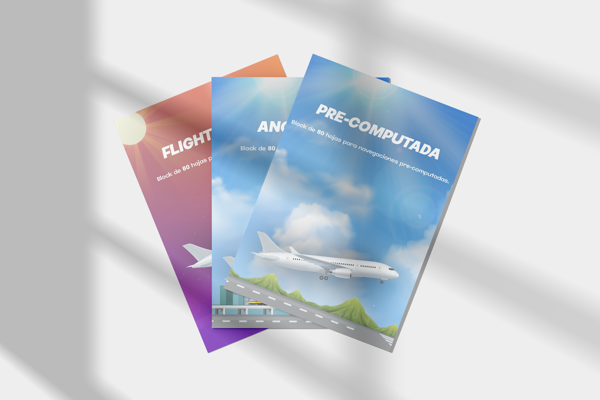
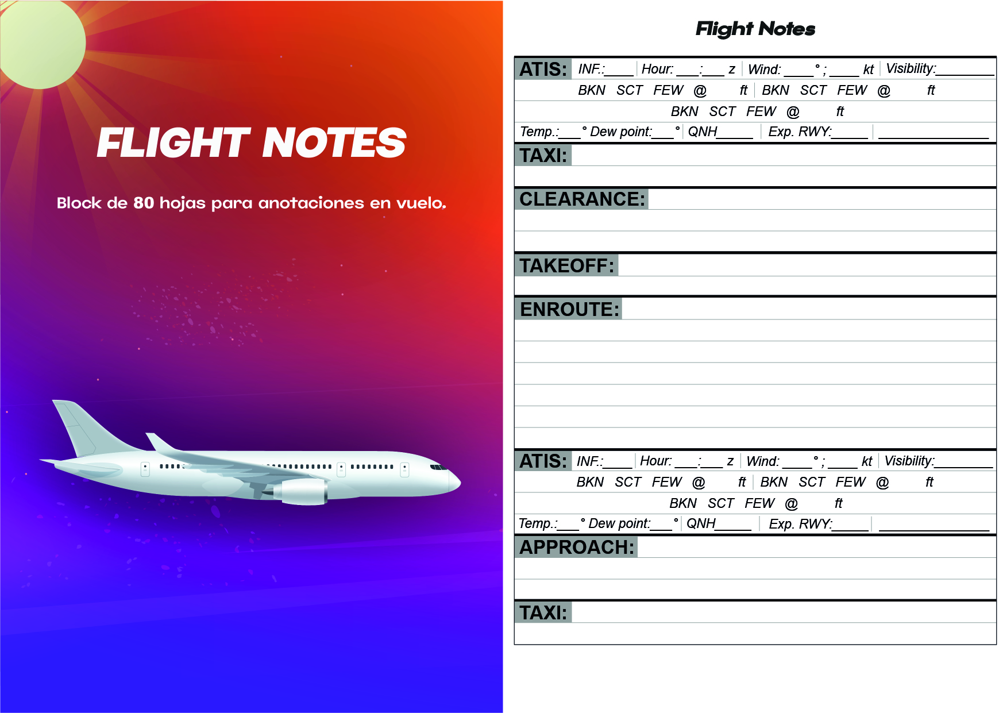
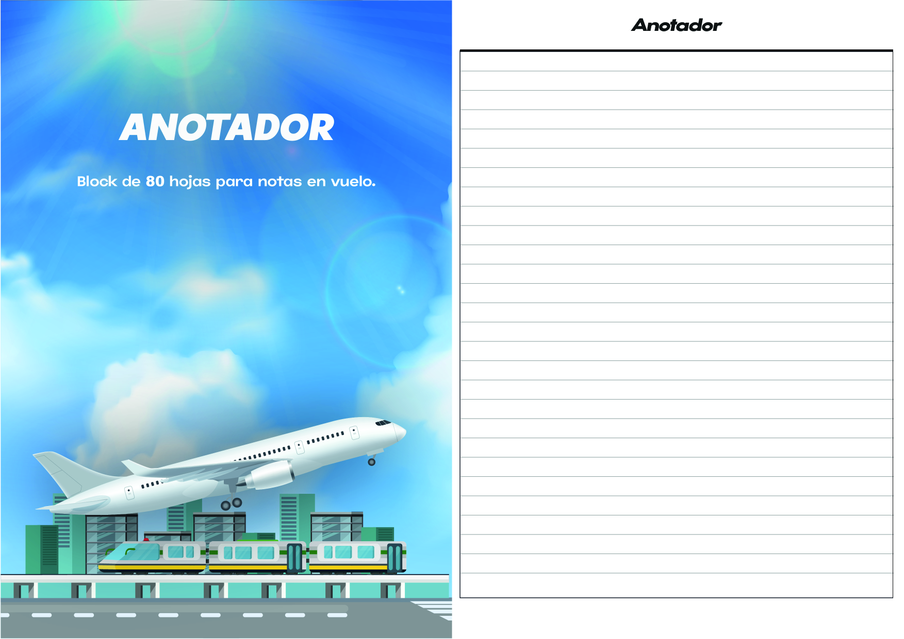
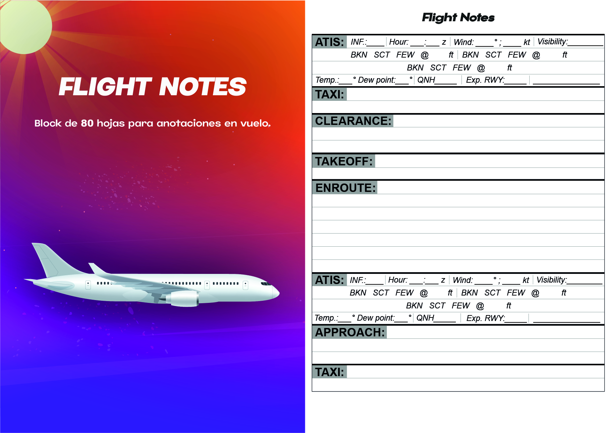
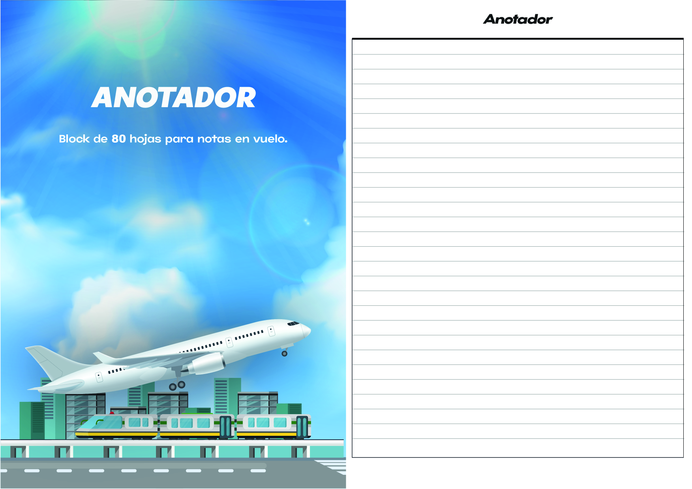

Presentación del set de cuadernos
Este set de blocks tiene el fin de facilitar y organizar la labor del piloto en sus vuelos.
El set consta de 3 blocks: Pre-computada, Flight Notes y un anotador.
Características de los blocks
Cantidad de páginas: 80
Formato: A5 (148x210mm)
Papel: Obra 80grs
Mock Ups

Tapas e Interiores
 


